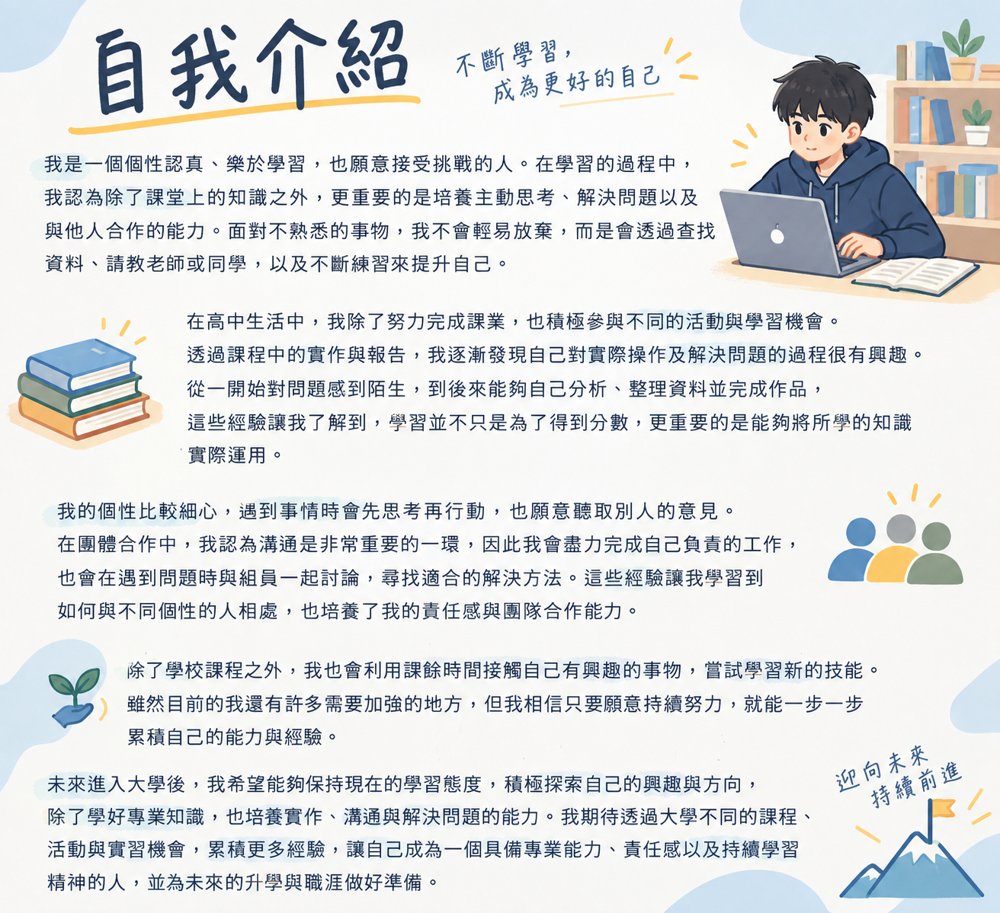

我是一個個性認真、樂於學習，也願意接受挑戰的人。在學習的過程中，我認為除了課堂上的知識之外，更重要的是培養主動思考、解決問題以及與他人合作的能力。面對不熟悉的事物，我不會輕易放棄，而是會透過查找資料、請教老師或同學，以及不斷練習來提升自己。
在高中生活中，我除了努力完成課業，也積極參與不同的活動與學習機會。透過課程中的實作與報告，我逐漸發現自己對實際操作及解決問題的過程很有興趣。從一開始對問題感到陌生，到後來能夠自己分析、整理資料並完成作品，這些經驗讓我了解到，學習並不只是為了得到分數，更重要的是能夠將所學的知識實際運用。
我的個性比較細心，遇到事情時會先思考再行動，也願意聽取別人的意見。在團體合作中，我認為溝通是非常重要的一環，因此我會盡力完成自己負責的工作，也會在遇到問題時與組員一起討論，尋找適合的解決方法。這些經驗讓我學習到如何與不同個性的人相處，也培養了我的責任感與團隊合作能力。
除了學校課程之外，我也會利用課餘時間接觸自己有興趣的事物，嘗試學習新的技能。雖然目前的我還有許多需要加強的地方，但我相信只要願意持續努力，就能一步一步累積自己的能力與經驗。

https://youtube.com/shorts/zbFrlcHkyt4?si=xynl-hb1lg1P106m